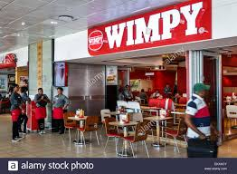
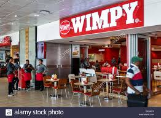

WIMPY
n 1967, two years before man first walked on the moon. This is when we opened our first restaurant in Murchies Passage, Durban and 1000 people visited the restaurant on opening day! Since then we’ve inspired families and friends to come together for shared moments over meals. What followed were many memorable moments
In 95 Wimpy is voted franchiser of the year, a great honour for the franchise that started it all.
In the world of Wimpy, we are the first to introduce espresso-based coffees nationally through our Premium Blend Coffee Range, making catch-up coffee breaks a lot more special. And yes, we will always “love it when you talk foreign”.